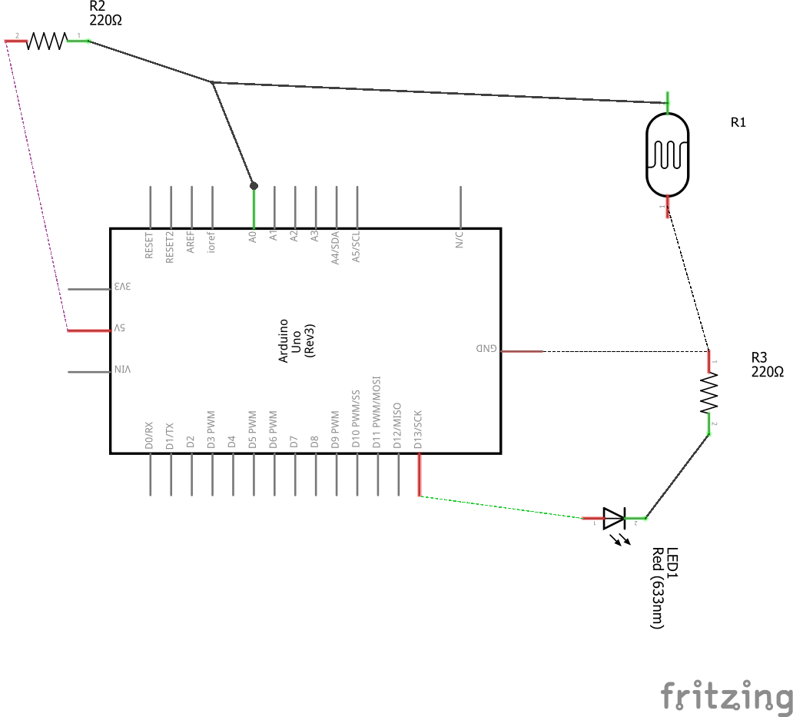
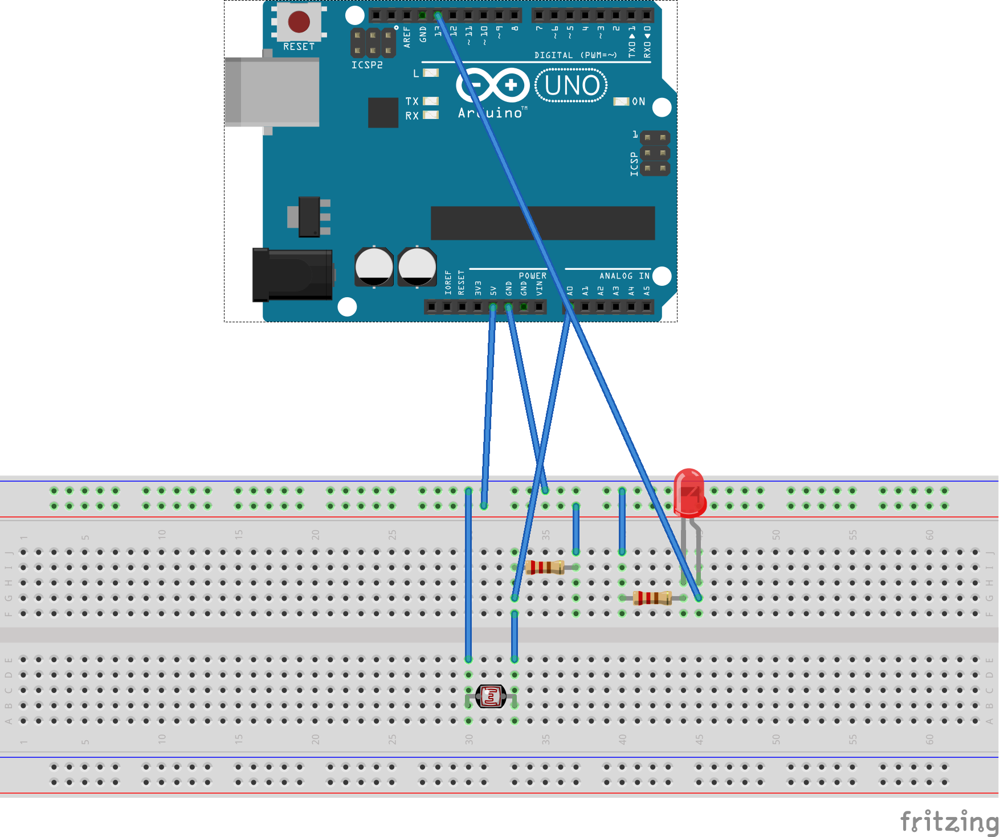

Segundo programa en Arduino- Usando un LDR
by Carolina Aranda
Publicado en Noviembre 27, 2017 at 8:00 PM

En este tutorial aprenderemos a montar un circuito básico con un LDR y un LED.
El material necesario es...
- Placa Arduino
- Una Protoboard
- Un diodo LED
- Un LDR
- Dos resistencia de 220 Ohmios
- Cables
- Un ordenador
- Ganas de aprender
¿Qué es un LDR?
Una fotorresistencia o LDR (Light Depending Resistor) es un componente cuya resistencia varía en función de la luz que incide sobre él.
Se suele usar en sensores de luz o detectores de movimiento.
Arduino no puede leer directamente la resistencia, sino la tensión. Cabe decir que los LDR no son rápidos en reaccionar a la luz.
Divisor de tensión
Para poder hacer un circuito en el que la luz se encienda con cierto umbral de oscuridad, debemos conocer primero el funcionamiento de un divisor de tensión.
Un divisor de tensión (sin entrar en cálculos ni fórmulas) es un circuito de lo más práctico. Se usa habitualmente para rebajar una señal de entrada.
Son circuitos sencillos y resuelven muchos problemas de resistencias a la hora de usar potenciómetros, o cuando tratamos señales.
R1 Y R2 forman un divisor de tensión, dependiendo la lectura de A0 de la luz que incida en el LDR.
Código Arduino
En este programa usaremos las estructuras condicionales de selección.
El código tiene la siguiente forma: if(CASO A){ACCION A}else{ACCION B}
En el caso de que la condición CASO A se cumpla se realizará la acción a, en caso contrario la acción b.
Para leer el valor del divisor de tensión usamos la función analogRead(PIN).
Resultado final
 Pulse para descargar el código del programa
Pulse para descargar el código del programa